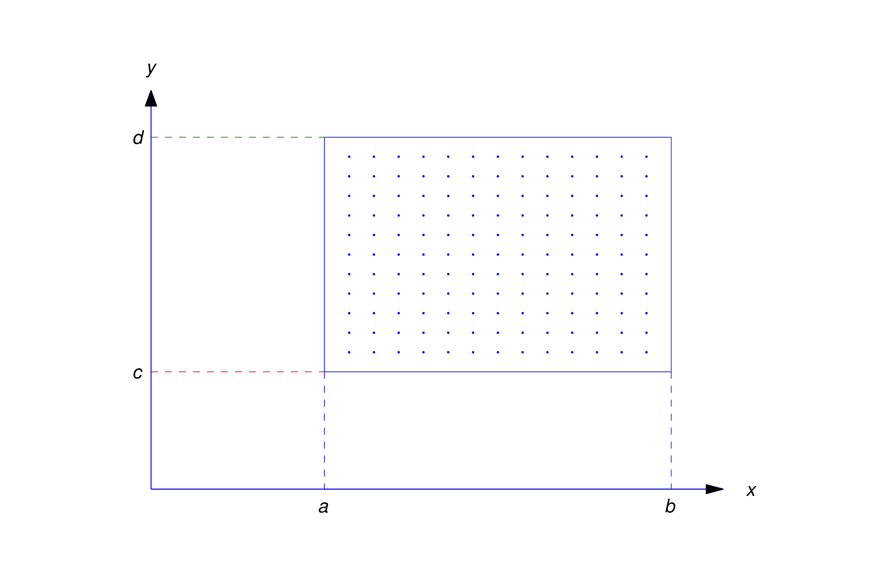
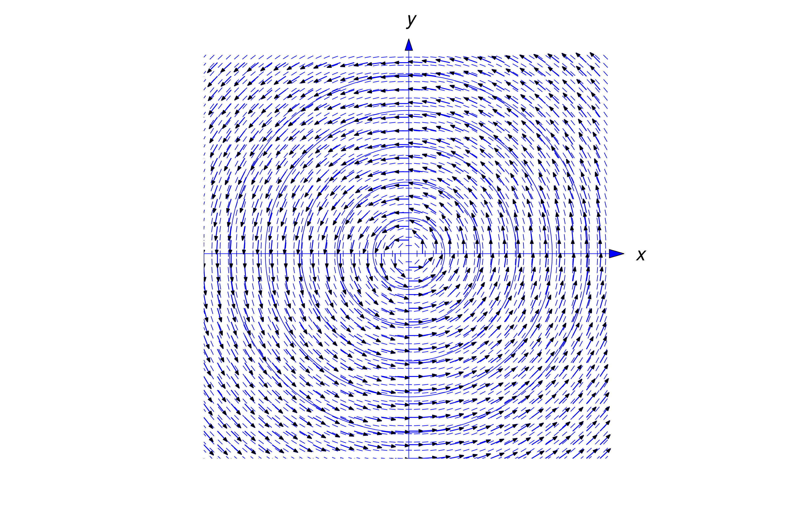
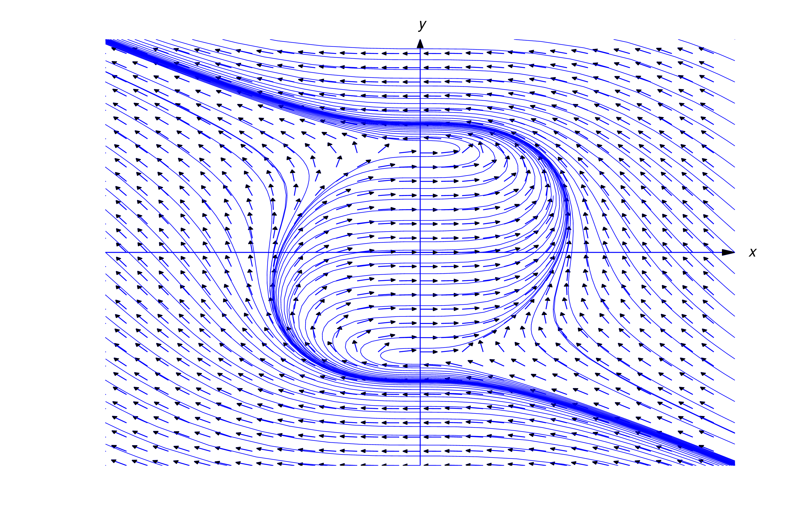
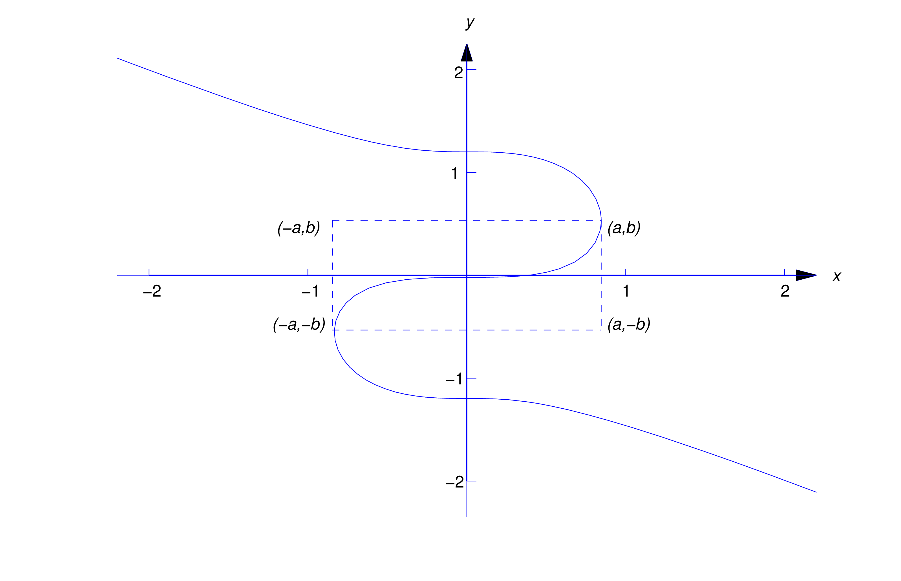

Section 1.3 Direction Fields for First Order Equations
1.3 DIRECTION FIELDS FOR FIRST ORDER EQUATIONS
Direction Fields
It’s impossible to find explicit formulas for solutions of some differential equations. Even if there are such
formulas, they may be so complicated that they’re useless. In this case we may resort to graphical or numerical
methods to get some idea of how the solutions of the given equation behave.
In Section 2.3 we’ll take up the question of existence of solutions of a first order equation \begin {equation} \label {eq:1.3.1} \frac{dy}{dx}=f(x,y)\end {equation} In this section we’ll
simply assume that (1.3.1) has solutions and discuss a graphical method for approximating them. In Chapter 3
we discuss numerical methods for obtaining approximate solutions of (1.3.1).
Recall that a solution of (1.3.1) is a function \(y=y(x)\) such that
\[ \frac{dy}{dx}=f\Big(x,y(x)\Big) \]
for all values of \(x\) in some interval, and an integral curve is either the graph of a solution or is made up of
segments that are graphs of solutions. Therefore, not being able to solve (1.3.1) is equivalent to not knowing the
equations of integral curves of (1.3.1). However, while it may be difficult to solve a differential equation, it is easy to calculate the slopes of the curves. To be specific,
the slope of an integral curve of (1.3.1) through a given point \((x_0,y_0)\) is given by the number \(f(x_0,y_0)\).
If \(f\) is defined on a set \(R\), we can construct a direction field (slope field) for (1.3.1) in \(R\) by drawing a short line segment through
each point \((x,y)\) in \(R\) with slope \(f(x,y)\). Of course, as a practical matter, we can’t actually draw line segments through every
point in \(R\); rather, we must select a finite set of points in \(R\). For example, suppose \(f\) is defined on the closed rectangular region \( R:\{a\le x\le b, c\le y\le d\}\)
Let \( a= x_0< x_1< \cdots < x_m=b \)
be equally spaced points in \([a,b]\) and
\( c=y_0<y_1<\cdots <y_n=d \)
be equally spaced points in \([c,d]\). We say that the points
\[ (x_i,y_j) \quad 0\le i\le m \quad 0\le j\le n\]
form a rectangular grid (Figure 1.3.1). Through each point in the grid we draw a short line segment
with slope \(f(x_i,y_j)\). The result is an approximation to a direction field for (1.3.1) in \(R\). If the grid points are
sufficiently numerous and close together, we can draw approximate integral curves of (1.3.1) by
drawing curves through points in the grid tangent to the line segments associated with the points in the
grid.

Figure 1.3.1 A rectangular grid
Unfortunately, approximating a direction field and graphing integral curves in this way is very tedious when
done by hand. However, there is software for doing this and using the direction
fields and integral curves gives useful insights into the behavior of the solutions of the differential equation even
if we can’t obtain exact solutions.
Sketch some integral curves on the direction field.
\[ \frac{dy}{dx}=\frac {x^2-y^2}{1+x^2+y^2} \]
Figure 1.3.4b A direction field and integral curves
for \(\displaystyle \frac{dy}{dx}=\displaystyle {\frac {x-y}{1+x^2}}\)
Parameteric Representation
Plotting direction fields using slope calculations won’t work for the equation
\begin {equation} \label {eq:1.3.2}
\frac{dy}{dx } =-\frac{x}{y}
\end {equation}
if the rectangle \(R\) contains part of the \(x\)-axis, since \(f(x,y)=-x/y\) is undefined when \(y=0\). Similarly, it won’t work for the equation
\begin {equation} \label {eq:1.3.3}
\frac{dy}{dx}={x^2\over 1-x^2-y^2}
\end {equation}
if the rectangle \(R\) contains any part of the unit circle \(x^2+y^2=1\), because the right side of
(1.3.3) is undefined if \(x^2+y^2=1\).
Because of this, some differential equation software is based on
writing differential equations in parametric form where \( x = x(t) \) and \( x = y(t) \)
regarded as functions of a parameter \(t\) of the form and then we can calculate the derivative using the parametric equations
\begin {equation} \label {eq:1.3.4}
\frac{dy}{dx} = \frac{ \displaystyle\frac{dy}{dt}}{ \displaystyle\frac{dx}{dt}} = \frac{A(x,y)}{B(x,y)}
\end {equation}
In this method both \( A(x,y) \) and \( B(x,y) \) are continuous on any rectangle \(R\).
\begin {equation} \label {eq:1.3.5}
{dx\over dt}=B(x,y) \quad {dy\over dt}=A(x,y)
\end {equation}
Equation (1.3.2) can be rewritten in parametric form as
\begin{equation*}
\frac{dy}{dx} = \frac{ \displaystyle\frac{dy}{dt}}{ \displaystyle\frac{dx}{dt}} = -\frac{x}{y} = {A(x,y)\over B(x,y)}
\end{equation*}
with \( A(x,y) = -x \) and \( B(x,y)=y \), so we have
\[ {dx\over dt}=-y \quad {dy\over dt}=x \]
Figure 1.3.5 shows a direction field and some integral curves for (1.3.2). As shown in Example 1.2.1 and will verify again in Section 2.2, the integral curves of (1.3.2) are circles centered at the origin

Figure 1.3.5 A direction field and integral curves for \(\displaystyle \frac{dy}{dx}=- {x\over y}\)
Equation (1.3.3) can also be rewritten in this form as
\begin{equation*}
\frac{dy}{dx} = \frac{ \displaystyle\frac{dy}{dt}}{ \displaystyle\frac{dx}{dt}} = {x^2\over1-x^2-y^2} = {A(x,y)\over B(x,y)}
\end{equation*}
with \( A(x,y) = x^2 \) and \( B(x,y)= 1-x^2-y^2 \), so we have
\[ {dx\over dt}=1-x^2-y^2 \quad {dy\over dt}=x^2\]
Figure 1.3.6 shows a direction field and some integral curves for (1.3.3). The integral curves near the top and
bottom are solution curves. However, the integral curves near the middle are more complicated. For example,
Figure 1.3.7 shows the integral curve through the origin. The vertices of the dashed rectangle are on the circle \(x^2+y^2=1\) (with \(a\approx 0.846\),
\(b\approx 0.533\)), where all integral curves of (1.3.3) have infinite slope because the equation is undefined on the unit circle.

Figure 1.3.6 A direction field and integral curves
for \(\displaystyle \frac{dy}{dx}= {x^2\over 1-x^2-y^2}\)
There are three separate solution curves of (1.3.3) on the integral curve in the Figure 1.3.7:
the segment above the level \(y=b\) is the graph of a solution on \((-\infty ,a)\)
the segment below the level \(y=-b\) is the graph of a solution on \((-a,\infty )\)
the segment between these two levels is the graph of a solution on \((-a,a)\)
 Figure 1.3.7
Note that even if \(f(x,y)\) is continuous and otherwise “nice” throughout the rectangle \(R\), some software for producing directions fields may require the differential equation to be rewritten in paremetric form, but even \(\displaystyle \frac{dy}{dx}=f(x,y)\) can be written in this way as
\[ {dx\over dt}=1 \quad {dy\over dt}=f(x,y)\]
with \(A(x,y)=f(x,y)\) and \(B(x,y)=1\)
Using Technology
As you study from this book, you’ll often be asked to use computer software and graphics. Exercises with this
intent are marked as C (computer or calculator required), C/G (computer and/or graphics required), or L
(laboratory work requiring software and/or graphics). Often you may not completely understand how the
software does what it does. This is similar to the situation most people are in when they drive automobiles or
watch television, and it doesn’t decrease the value of using modern technology as an aid to learning.
Just be careful that you use the technology as a supplement to thought rather than a substitute for it.